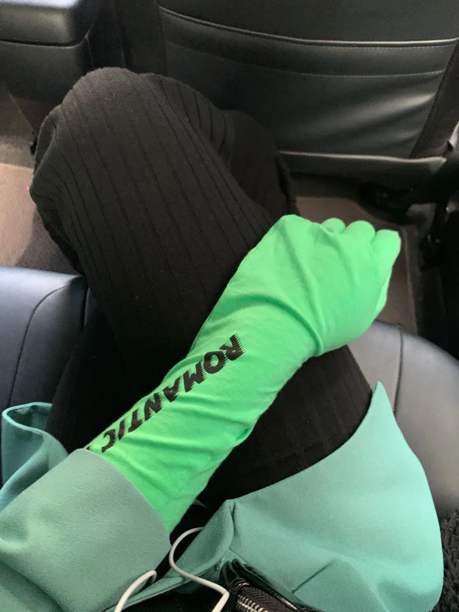
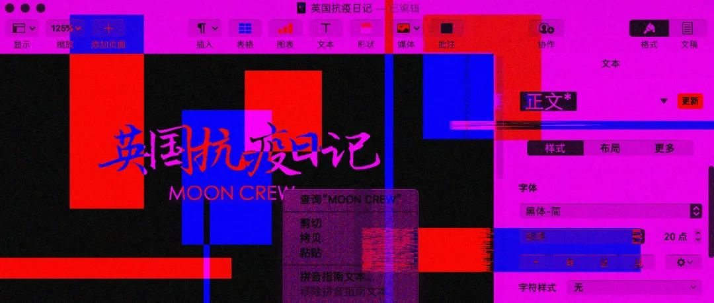

专访｜坂本龙一：人类是稍微偏离自然轨道的、有点坏掉的猴子
原文链接 备份链接 海啸和疾病，都让我们再次注意到自己是自然的一部分。 记者 | 孔冰欣 南洋爪哇岛的热带丛林，金发的战俘向他走来。而他泄露天机的颤抖的眸色里，那段细碎、幽玄、物哀的配乐，早已砌下落樱如雪乱，乱云飞渡，渡不了方寸间无憾的圆 …

今天是3月22日，月相为2%的残月。
It is March 33 with a 2 percent of Waning Crescent.
距离新月还有 2 天。
There are 2 days until New Moon.
文 || 张天鹤
《大空头》电影原声。
_标题大概确实符合我和天鹤的观点……
_
主要是我们不够聪明，搞不懂啊。
扶额。
三月二十日
今天是和阿高以及阿迪一起快乐隔离的第三天。伦敦封城的消息慢慢散布、传出，是真是假还待考量。可小道消息一出，闹的全城上下人心惶惶，许多出门在外的伦敦当地人也急着赶那班最早的火车回家了。就连我的租客，昨天也从利物浦跑来，慌忙签了合同，拿了钥匙。
今天早上呼吸着口罩滤过的氧气，戴着手套（打车时差点把手机屏幕戳碎）跑去了阿白家取“救济粮”。
货物清单：
两盆香菜
四听可乐
三听啤酒
两盒牛柳
一盒牛肉块
三个绿色外星椒
两盒火鸡肉
一盒西红柿
阿白要回北京了。

△ 我时尚的隔离手套。
也就是说，我是当下月亮纵队唯二驻扎伦敦的成员之一了，而叶子又偷懒不写日记，就由我来继续。
我为自己设计了丰富的“宅家”日程。今天的内容是：
一、读三章《小妇人》。
二、去楼下跑步半小时（不出楼门）。
三、晚饭给阿高和阿迪做道菜。
四、晚上看部新电影。
也为大家推荐一部电影吧：
《十二宫》（_Zodiac_）（剧情/悬疑/惊悚/历史/犯罪）
导演：大卫·芬奇（David Finch）。其它代表作：《七宗罪》、《搏击俱乐部》等。
主演：杰克·吉伦哈尔（《断背山》主演）、马克·鲁弗洛（《绿巨人》主演）、小罗伯特·唐尼（《钢铁侠》主演）
片场：157分钟
IMDB评分：7.7
豆瓣评分：7.4
烂番茄（Rotten Tomatoes）评分：89%
△ 《十二宫》海报。如今这三位都在漫威了。
我一直被各类有关杀人狂、精神变态者、心理学相关甚至沾边的电影吸引，个人也读过很多关于十二宫杀手（Zodiac Killer）又称黄道带杀手的故事。这部电影完满了我对十二宫杀手的所有想象，也让我对揭开杀人谜团的背景故事了解更多了。
十二宫杀手是真实存在过的。上世纪六十年代末至七十年代初，美国旧金山地区曾发生二十多起“十二宫杀手”连环杀人案，至少三十人遇害。第二起案件发生后的一个多月，旧金山三家地方报纸都接到神秘来信和密码，发信人称自己是他们的凶手……
那么问题来了，谁是Zodiac？
三月二十一日
今天收到了NHS（英国国家医疗服务体系）的一个通知：本周四晚上八点整，我们呼吁所有人打开窗户一同为医护人员鼓掌，以表尊敬。

△ NHS发来的消息。
英国这般厚脸皮的国家当然没有意大利人奔放，我都怀疑平时需要酒精才能暂时摆脱正经人设的“老英”们能不能一起为医护人员喝彩。但是如果，全伦敦，甚至全英上下都选择参与，那的确是情真、意实。
我站在阳台上，静静等待周四。
今日电影推荐
《大空头》（_The Big Short_）（剧情/传记）
导演：亚当·麦凯（Adam McKay）
主演：克里斯蒂安·贝尔（《美国精神病人》主演）、瑞恩·戈斯林、布拉德·皮特
片长：170分钟
IMDB评分：7.8
豆瓣评分：8.5
烂番茄评分：88%

△ 《大空头》海报。
可以把枯燥的2008年金融危机讲得生动有趣，只有《大空头》这部电影做到了。它成功打破了电影和观众的屏障，让客串明星【赛琳娜·戈麦斯（Selena Gomez），玛格特·罗比（Margot Robbie）等】直接与观影者互动、聊金融，让我这个高中经济课差点不及格的人也看懂了。剧情紧凑流畅，表现手法独特，演员阵容强大，还帮广大群众科普了零八年的金融危机到底由何而起……一句话：太值得看了。

△ 《大空头》剧照。
这两天我都一个人看电影。两个室友要不在学习，要不在申请工作。可是，今天电影刚刚播到一半，两个经济或者金融系的室友就都凑过来跟我一起看了！不懂的术语，他们还给我通俗地解释了一遍。看完之后，我对自己的金融知识有了莫名的自信。疫情时期，学习与快乐两不误。

往期英国日记
3月19日：计划赶不上变化，一个仓促的告别（白清扬）
3月18日：风中海洋的气息，是游子之心唯一的慰藉（白清扬）
3月13日~17日：私人化的记录与感激（张天鹤）
3月17日：无论TA是真傻还是装傻，你都叫不醒TA（白清扬）
3月16日：第一节网课，老师像往常一样来到教室（白清扬）
张天鹤往期文章
散文 || 北京夜店故事
情人节特别策划 || 颓废时代的爱情（ft. 严已人）
杂文 || 金童综合症
诗歌 || 偷渡
散文 || 我梦见永恒
「月亮沙龙」本期话题
点击链接，进入文章参加投票与讨论。
欢迎各位在后台留言，与我们进行交流。
读者的留言将会在每周的沙龙总结推送中呈现。
责任编辑、排版：白清扬。
封面图、首图、尾图：唐颂。
插图：豆瓣。
长按二维码向我转账
受苹果公司新规定影响，微信 iOS 版的赞赏功能被关闭，可通过二维码转账支持公众号。
原文链接 备份链接 海啸和疾病，都让我们再次注意到自己是自然的一部分。 记者 | 孔冰欣 南洋爪哇岛的热带丛林，金发的战俘向他走来。而他泄露天机的颤抖的眸色里，那段细碎、幽玄、物哀的配乐，早已砌下落樱如雪乱，乱云飞渡，渡不了方寸间无憾的圆 …
原文链接 备份链接 今天是3月20日，月相为10%的残月。 It is March 20 with a 10 percent of Waning Crescent. 距离新月还有 4 天。 There are 4 days until …
原文链接 备份链接 今天是3月19日，月相为20%的残月。 It is March 19 with a 20 percent of Waning Crescent. 距离新月还有 5 天。 There are 5 days until …
原文链接 备份链接 燃财经（ID:rancaijing）原创 作者 | 闫丽娇 编辑 | 周昶帆 进入3月，很多行业开始陆续复工，“影视行业何时能复工”依然牵动着很多人。 在疫情持续蔓延的50多天里，影视行业受到了前所未有的冲击。贺岁档电 …
原文链接 备份链接 今天是3月18日，月相为29%的残月。 It is March 18 with a 29 percent of Waning Crescent. 距离新月还有 6 天。 There are 6 days until …